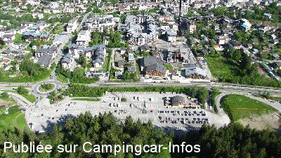
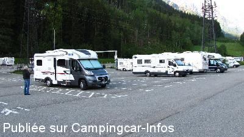
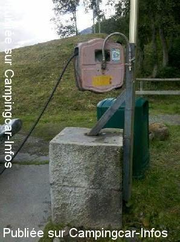
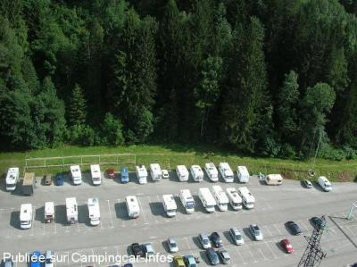
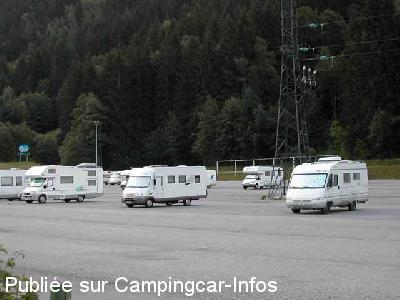
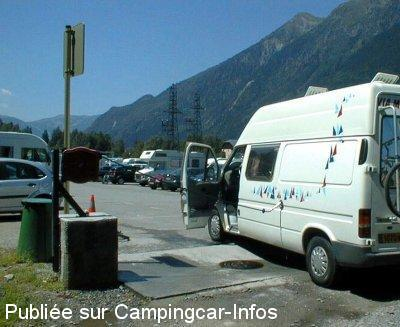

ASN = Aire de services avec stationnement nuit possible de :
CHAMONIX MONT BLANC
(N° 501)
Accès/adresse :
Route Blanche, D1506
Parking du Grépon
74400 CHAMONIX MONT BLANC
Parking du Grépon
74400 CHAMONIX MONT BLANC
Latitude : (Nord) 45.91578° Décimaux ou 45° 54′ 56′′
Longitude : (Est) 6.8697° Décimaux ou 6° 52′ 10′′
Tarif : 2015
Stationnement : 10 à 12,50 €
Gratuit la 1 ère heure
Services gratuits
Paiement par carte bancaire ou espèces
Type de borne : Artisanale
Services :


Autres informations :
Fermeture en période de neige abondante, situé en couloir d'avalanche.
Aucun service pendant la saison hivernale
Tel : +33(0)450 531 113
http://www.chamonix.fr

Le 20/07/2014 par

Le 20/07/2014 par a&b

Le 11/06/2012 par Août 2011, Les Oisons

Le 15/04/2007 par KIKE

Le 14/07/2004 par j.petit01

Le 17/08/2003 par Franck Dichamp
de
Josserand
le 28/10/2015 :
De passage à Chamonix, la barre de hauteur à l'entrée du parking a été placée pour la saison hivernale, donc plus d'accès au parking et aux services.
Le stationnement est possible le long de la route vers le bois du Bouchet mais plus bruyant
De passage à Chamonix, la barre de hauteur à l'entrée du parking a été placée pour la saison hivernale, donc plus d'accès au parking et aux services.
Le stationnement est possible le long de la route vers le bois du Bouchet mais plus bruyant
de
Philippe
le 19/08/2015 :
Il existe sur la route d'Argentière, à deux trois kilomètres de Chamonix, plusieurs possibilités de parking tranquilles, gratuits, proches de la ligne de bus qui pour 1,5 euros vous amènera en centre ville.
Personnellement je préfère m'éloigner un peu, plutôt que de me concentrer sur les quelques parkings sans barres de hauteur, dont la vue ne peut que donner une mauvaise image de notre activité auprès des non pratiquants.
La grand parking Aire officiel payant étant souvent archi comble de voitures..... Mais tout le monde voit midi à sa porte.
Il existe sur la route d'Argentière, à deux trois kilomètres de Chamonix, plusieurs possibilités de parking tranquilles, gratuits, proches de la ligne de bus qui pour 1,5 euros vous amènera en centre ville.
Personnellement je préfère m'éloigner un peu, plutôt que de me concentrer sur les quelques parkings sans barres de hauteur, dont la vue ne peut que donner une mauvaise image de notre activité auprès des non pratiquants.
La grand parking Aire officiel payant étant souvent archi comble de voitures..... Mais tout le monde voit midi à sa porte.
de
jami26
le 11/08/2015 :
2 nuits mi-juin 2015:
ce n'est qu'un parking mais très bien situé: à 2 pas du centre de Chamonix et du départ du téléphérique pour l'aiguille du midi, ainsi qu'à 10 minutes à pied de la gare du Montenvert.
2 nuits mi-juin 2015:
ce n'est qu'un parking mais très bien situé: à 2 pas du centre de Chamonix et du départ du téléphérique pour l'aiguille du midi, ainsi qu'à 10 minutes à pied de la gare du Montenvert.
de
Jean Claude SAUZE
le 21/06/2015 :
§J'ai séjourné sur ce parking du 07 au 08 juin. Il est très bien situé par rapport au centre ville de Chamonix et des départs de sentier de randonnée. Une aire de services gratuite permet de faire les vidanges et pleins d'eau. Le tarif est de 10€ pour 24 heures.
§J'ai séjourné sur ce parking du 07 au 08 juin. Il est très bien situé par rapport au centre ville de Chamonix et des départs de sentier de randonnée. Une aire de services gratuite permet de faire les vidanges et pleins d'eau. Le tarif est de 10€ pour 24 heures.
de
brams
le 26/08/2014 :
Parking au départ du téléphérique aiguille du midi. Très vite chargé, mais en ville.
Parking au départ du téléphérique aiguille du midi. Très vite chargé, mais en ville.
de
a&b
le 20/07/2014 :
Cena pravilna 12.5€=24h. Nisem opazil brezplačnega vstopa za 1h. Voda OK. Pazite na čistočo! Spanje mirno. 3,5 min hoje za postajo Aigullie du Midi in 10 min hoje za postajo Mer de Glace! Dober posel!
Cena pravilna 12.5€=24h. Nisem opazil brezplačnega vstopa za 1h. Voda OK. Pazite na čistočo! Spanje mirno. 3,5 min hoje za postajo Aigullie du Midi in 10 min hoje za postajo Mer de Glace! Dober posel!
de
balibalo
le 19/07/2014 :
La franchise gratuite est maintenant d'une heure. Oui c'est vrai, il y a un deuxième robinet mais sans tuyau, les gens préfèrent tout faire avec celui où il y a déjà un tuyau, 12,50€ pour 24 h et 6€ pour 12 h, service toujours gratuits mais je me gare sur le parking d'Argentière où il y a une vue imprenable sur tout le Mont Blanc.
La franchise gratuite est maintenant d'une heure. Oui c'est vrai, il y a un deuxième robinet mais sans tuyau, les gens préfèrent tout faire avec celui où il y a déjà un tuyau, 12,50€ pour 24 h et 6€ pour 12 h, service toujours gratuits mais je me gare sur le parking d'Argentière où il y a une vue imprenable sur tout le Mont Blanc.
de
Famiski
le 09/12/2012 :
Nous y sommes passé fin octobre et l'aire était fermée. Un parking de remplacement était disponible le long de la route (fréquentée) et plus loin du centre (ce n'est pas indiquer, il faut s'adresser à l'OT qui est fermé... quand on arrive le soir). Elle devrait rouvir en décembre mais il vaut mieux s'adresser à l'O.T. pour avoir les infos récentes.
Nous y sommes passé fin octobre et l'aire était fermée. Un parking de remplacement était disponible le long de la route (fréquentée) et plus loin du centre (ce n'est pas indiquer, il faut s'adresser à l'OT qui est fermé... quand on arrive le soir). Elle devrait rouvir en décembre mais il vaut mieux s'adresser à l'O.T. pour avoir les infos récentes.
de
Les Oisons
le 09/06/2012 :
Séjournons depuis quelques années à Chamonix. Parking idéal en terme de proximité de la ville. Mais en plein été, le parking est surchargé ! On se retrouve avec des voitures qui se stationnent pour la journée devant les camping-cars, nous empêchant parfois de quitter l'emplacement (voir photo que nous avons prise l'an dernier). Mieux vaut choisir de se stationner côté montagne plutôt qu'au centre du parking. Confirmons que dès 6h le personnel du téléphérique arrive et se gare sur ce parking, suivi des alpinistes dès 6h30. Parfois donc un peu bruyant. Quand le parking est plein, les manoeuvres pour aller vidanger sont difficiles ... quand on ne trouve pas une voiture garée sur l'aire de vidange car n'ayant pas trouvé d'autre place. L'an dernier, un soir, nous étions plus d'une centaine de cc !
Séjournons depuis quelques années à Chamonix. Parking idéal en terme de proximité de la ville. Mais en plein été, le parking est surchargé ! On se retrouve avec des voitures qui se stationnent pour la journée devant les camping-cars, nous empêchant parfois de quitter l'emplacement (voir photo que nous avons prise l'an dernier). Mieux vaut choisir de se stationner côté montagne plutôt qu'au centre du parking. Confirmons que dès 6h le personnel du téléphérique arrive et se gare sur ce parking, suivi des alpinistes dès 6h30. Parfois donc un peu bruyant. Quand le parking est plein, les manoeuvres pour aller vidanger sont difficiles ... quand on ne trouve pas une voiture garée sur l'aire de vidange car n'ayant pas trouvé d'autre place. L'an dernier, un soir, nous étions plus d'une centaine de cc !
de
Jean-Louis
le 02/11/2011 :
§Toussaint 2011 : le tarif est maintenant 12.50 €/24h. Consolation : même tarif pour les voitures. Tout à fait recommandable pour nous : propre, spacieux, horizontal, à 100 mètres du téléphérique de l'Aiguille du Midi et 200 ou 300 mètres du centre, et presque vide en cette basse saison. Mieux vaut quand même éviter de se mettre trop près des voitures ou de l'abri de la caisse (bruits de portières à l'heure de sortie des restos ou des boites de nuit). Chamonix a été très agréable aussi: animée mais pas surpeuplée, commerces presque tous ouverts, très bon accueil à l'O.T.
§Toussaint 2011 : le tarif est maintenant 12.50 €/24h. Consolation : même tarif pour les voitures. Tout à fait recommandable pour nous : propre, spacieux, horizontal, à 100 mètres du téléphérique de l'Aiguille du Midi et 200 ou 300 mètres du centre, et presque vide en cette basse saison. Mieux vaut quand même éviter de se mettre trop près des voitures ou de l'abri de la caisse (bruits de portières à l'heure de sortie des restos ou des boites de nuit). Chamonix a été très agréable aussi: animée mais pas surpeuplée, commerces presque tous ouverts, très bon accueil à l'O.T.